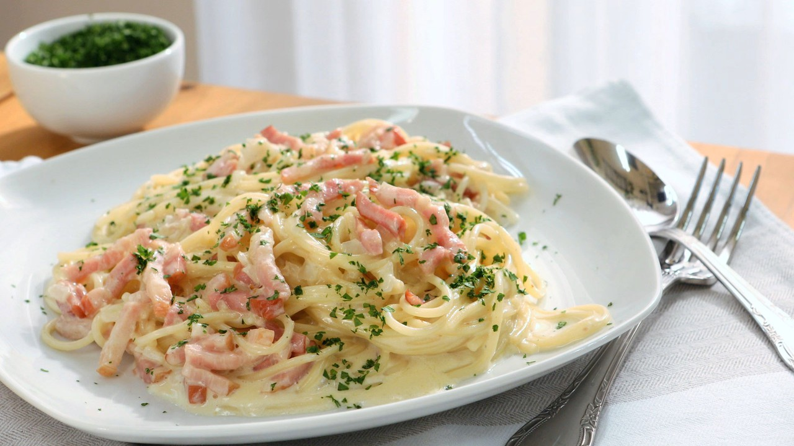

Espaguetis a la Carbonara
20 Diciembre, 2021
Los espaguetis a la carbonara es probablemente la forma más internacional de preparar esta pasta. La auténtica salsa carbonara de italia contiene yema de huevo, queso y bacon.
- Tiempo: 20 minutos
- Dificultad: Baja
- Raciones: 4
- Vegetariana: No
- Autor: Adrian Castro